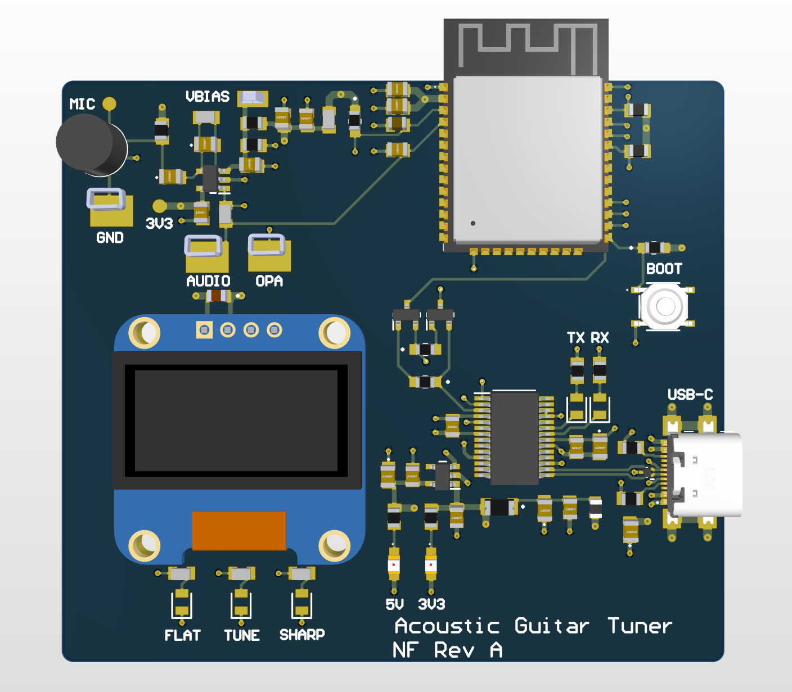

Acoustic Guitar Tuner PCB
3D layout visualization

Overview
The board captures acoustic guitar signals through an electret microphone and conditions the low-amplitude analog waveform before passing it to the ESP32-S3 for frequency detection and note identification. The design integrates a low-noise microphone preamplifier, analog biasing, filtered power rails, USB-C power, USB-to-UART programming, an OLED display interface, and accessible test points for bring-up and debugging.
Schematic capture
More details
The microphone front end biases the electret microphone and amplifies its low-level output before conversion by the ESP32-S3. Gain and bandwidth components were selected around the expected acoustic-guitar frequency range. The four-layer layout uses dedicated ground and power planes, localized decoupling, filtered supply rails, analog and digital partitioning, ESD protection, and accessible test points. The schematic and PCB completed ERC and DRC verification before fabrication.